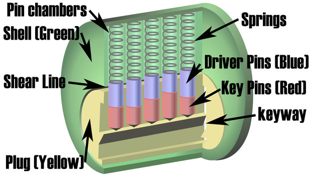
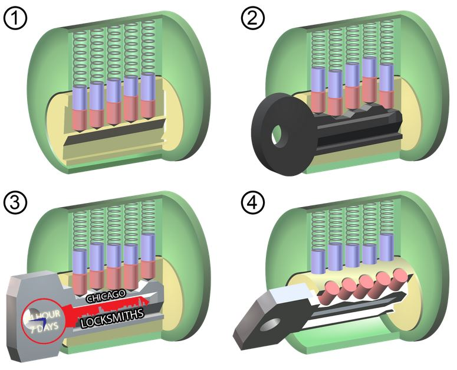
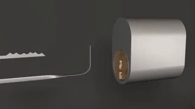

Excited to learn lockpicking? Let's get straight to it!
Here on Lockmaster, you will learn the theory behind picking locks. Since the most common design for locks is the pin-tumbler, this is what we will be focusing on.
But before we get started, let's get to know a litte more about the lock itself.
The workings of a lock
The standard pin-tumbler lock consists of a few different components: the cylinder, the plug, the shear line, key pins, driver pins and the springs.
The cylinder contains all the lock components and also makes up the top of the shear line.
The plug is a cylinder that rotates inside the cylinder 'housing' and creates a rotational shear line and the bottom of the shear line. The front of the plug is also where the key is inserted whilst the tailpiece on the back retracts the latch when the lock is rotated. This causes the lock to open.
The shear line, which is mentioned above, is the gap between the cylinder and the plug and is the imaginary line that the plug rotates around. When the shear line is obstructed, the plug won't be able to turn as the plug and the cylinder become locked onto each other. This makes the lock unable to freely rotate and unable to unlock on free will.
The key pins are the lower set of pins ans has the purpose of reading the cuts of the key. This is done by using pins of different lengths that match the depth of the cuts of the key.
The driver pins are the higher set of pins that obstruct the shear line. They are all the same length and determines whether a lock can be opened or not.
Lastly, the springs are what forces everything down into the plug to keep the driver pins at the shear line when no key is present. They push the key pins against the key to help them read the cuts and also prvents the pins from getting stuck in the pin chamber.
When the key is pushed into the front of the plug, the key pins are pushed upwards, which leaves the shear line not obstructed as the key pins' lengths match the cuts of the key. Since the shear line is not obstructed, the key can now rotate the plug and open the lock.
The diagrams below shows the inside of the lock with all these components and how the key unlocks the lock:
 Lockpicking techniques
There are two main tools used when picking a lock: the pick and the tension wrench.
The pick is generally anything that is used to push the key pins upwards and is usually made of a thin wire.
The tension wrench is anything that is used to rotate the keyhole.
There are also two main techniques when picking a lock: single pin picking and raking.
Single pin picking
To pick a lock using the single pin picking technique, first insert the tension wrench into the keyhole and turn it in the direction to open the lock, making sure to keep the pressure on the tension wrench. By keeping this pressure, the driver pins are kept above the shear line when they are set into position rather than falling back down.
Once this is done, use the pick tool to put each pin into position by pushing it upwards. A pin will be set in place when a click is heard.
Pins should be worked in order of binding pins. The binding pin is the stiffest pin and once it is set, another pin is classified as the binding pin.
Each pin should be pushed up to find out which pin is the stiffest (binding pin). Once that is found, push that pin upwards until a click is heard. Repeat this process until all the pins are set.
Once all the driver pins are above the shear line and all the key pins are below the shear line, the shear line is no longer obstructed which allows the tension wrench to open the lock by further rotating the keyhole.
The diagram below shows this process:

Raking
The raking technique involves inserting a tension wrench and turning it in the direction to open the lock whilst maintaining pressure on it. This is similar to the first step in the single pin picking technique.
The pick tool is inserted to the back of the plug and is quickly pulled out. This relies on the same theory behind single pin picking, however, instead of working on each pin individually, raking works on all of the pins as the pick tool is pulled out.
Repeat this process until all pins are set and the tension wrench is able to rotate the plug and unlock the lock.
The below diagram demonstrates the raking technique:
Making lockpicking tools
Lockpicking tools can be made out of anything that won't bend under pressure when pushing the pins upwards. Paperclips and bobby pins are great for homemade lockpicking tools.
To make a tensioning tool, fold a straight piece of wire into two. Bended wire, approximately 1cm from the folded end, 90 degrees to form an 'L' shape. This bent folded part is what will be inserted into the keyhole.
To make a pick tool, bend the tip of a straight piece of wire to form a hook shape. This will go into the keyhole and the hook will be used to push the pins up.
The photo below shows a picking tool and a tensioning tool made out of paperclips: